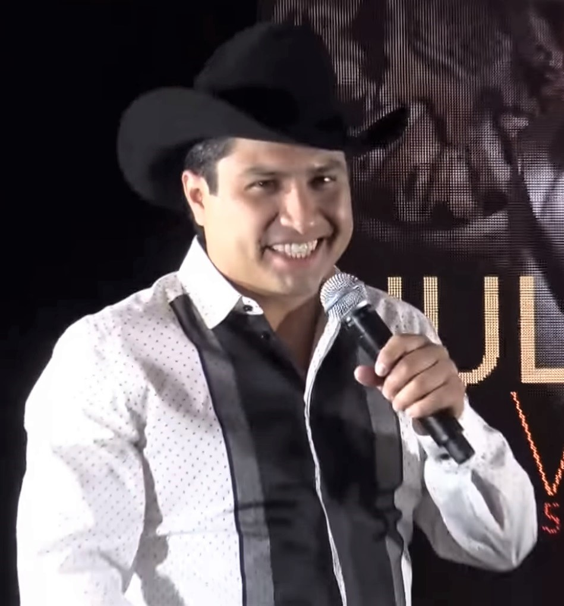

Mi artista favorito
Julion Alvarez
Julión Álvarez Montelongo nació y creció en la colonia Benito Juárez del municipio de La Concordia, Chiapas. Su padre es originario de San Lucas Nieves, Zacatecas, y su madre es originaria de Torreón, Coahuila.
A los 17 años, mientras cursaba el cuarto semestre de Ingeniería Mecánica en el Instituto Tecnológico de Tuxtla Gutiérrez (ITTG), Álvarez decide irse al puerto de Mazatlan, Sinaloa, por recomendación de Aldo Sarabia, perteneciente a la Banda El Recodo. Con ello abandonando sus estudios.
Ya localizado en Mazatlán, comenzó a trabajar con la Banda Mr. Lobo, perteneciendo a esta agrupación por un espacio de ocho meses, después de los cuales se dedicó a cantar en restaurantes locales y cantinas para sostenerse. Al poco tiempo, conoce un grupo de jóvenes que deseaban formar una banda. De esta forma nació la Banda MS, con quienes tuvo la oportunidad de grabar sus tres primeras producciones que dieron a la banda sus primeros éxitos «Ayer la vi por la calle», «Mi mayor anhelo» y «Los claveles de enero».
Permaneció en la agrupación hasta 2007; año en el que comienza junto con algunos amigos su propio proyecto, llamado Julión Álvarez y su Norteño Banda.
En 2014, participó como coach en La Voz México, obteniendo con su pupilo Guido Rochin, el primer lugar en la competencia.

Top 5 canciones de Julion Alvarez mas escuchadas de Spotify
Puesto
Canción
Reproducciones
1
Que Te Vaya Bien
239,433,210
2
Pongámonos De Acuerdo
239,092,087
3
Regalo De Dios
115,491,235
4
Lo Tienes Todo
112,007,961
5
Casi Completa
43,429,275
Video de TikTok